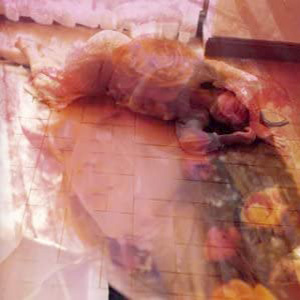

录音室专辑：第21张
发行年份：2003年
发行日期：5月14日
| 歌名 | 作词 | 作曲 | 编曲 |
|---|---|---|---|
| 時 (间奏) | 武部聡志 | 武部聡志 | |
| Rain | 岡本真夜 | 岡本真夜 | 武部聡志 |
| 虹 | 中森明菜 | 松本良喜 | 武部聡志 |
| 光 (间奏) | 武部聡志 | 武部聡志 | |
| 風の果て | 松井五郎 | 織田哲郎 | 武部聡志 |
| I hope so | 中森明菜 | 井上慎二郎・武部聡志 | 武部聡志 |
| Veil | 中森明菜 | 武部聡志 | 武部聡志 |
| 宵 (间奏) | 武部聡志 | 武部聡志 | |
| 夕闇を待って | 川江美奈子 | 川江美奈子 | 武部聡志 |
| 憧憬 | 川江美奈子 | Zenkyu | 妹尾武 |
| 紡ぎ唄 | 川江美奈子 | 川江美奈子 | 武部聡志 |
| 夢 (间奏) | 武部聡志 | 武部聡志 | |
| うつつの花 | 松井五郎 | マシコタツロウ | 武部聡志 |
| Days | 中森明菜 | 織田哲郎 | 武部聡志 |
DVD（仅限初回限定盤）
| 歌名 | 作词 | 作曲 | 编曲 |
|---|---|---|---|
| Days (宣传片) | 中森明菜 | 織田哲郎 | 武部聡志 |
首发规格：CD: UMCK-1162，CD+DVD: UMCK-9035
唱片公司：UNIVERSAL J
排行榜：Oricon公信榜专辑周榜第15位
再发行：
2005年7月1日 - 数码下载
2017年5月3日 - UHQCD: UPCH-7272